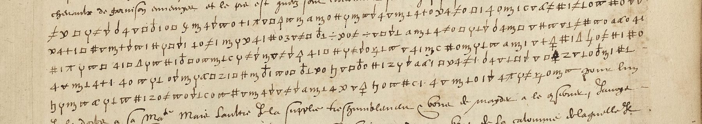

At a glanceKey from adjacent plaintext · complete · 514 of 522 cipher tokens
- The letter
- Joachim de Jaucourt, baron de Dinteville, royalist lieutenant-general in Champagne, to Louis de Gonzague, duc de Nevers, from Langres, 4 July 1592: a clear letter with two passages in cipher, about ten lines.
- Where
- Bibliothèque nationale de France, Français 3621, no. 116, f. 130 (Gallica btv1b52524472n, view 269); DECODE R9451, catalogued as “with cipher and decryption” and dated 3 July. The leaf has no decipherment, and the date is the 4th.
- The cipher
- A homophonic substitution of letters, digits and signs. Small crosses and strokes make new signs (∇ is a, ∇ with a stroke is t), and four signs are nulls.
- How it was deciphered
- The key comes from Dinteville’s letter of 1 July on f. 128, in the same signs, whose decipherer wrote the plain text above the cipher. The key, read on f. 128, was carried over to f. 130. Here the scripts were re-run, three lines and the gloss were checked on the images, and f. 128 was compared with its 1882 printed text.
- What it says
- Dinteville is alone at Langres with the townsmen, the Lorraine army is near, and without troops no taille can be raised; “s’il ne plaist a Sa Maiesté d’y pourvoir”, he asks to withdraw.
- Still open
- Eight signs on three lines that are unclear on the leaf.
- Credit
- Transcription, key and reading by Alex Zarco (alejandrozarco, pull request 24, 6 Oct 2026), completing the partial key and fragments published by NoAutopilot (cipher-lab), who also found the 1882 print. This project found the f. 128 crib on 21 Sept and failed to get a key from it.
01 The two leaves

Français 3621 is a volume of letters to the duc de Nevers. Two Dinteville letters from Langres, two leaves apart, use the same signs. The first, no. 114 on f. 128, is dated 1 July 1592, and someone in Nevers’s household wrote its decipherment above each cipher line. The second, no. 116 on f. 130, is dated “de Langres le iiije Juillet 1592”. Its cipher has no gloss. DECODE describes R9451 as having a decipherment, but the leaf does not have one. Its postscript is in clear French, and the verso carries only the address.
The Revue de Champagne et de Brie printed Dinteville’s letters to Nevers in 1882 (t. XII, pp. 340–341). It gives f. 128 in full, from the decipherment, and it summarises f. 130 from its clear text only, with a footnote that the letter is in cipher. The cipher passages of f. 130 have not been printed.
02 The key, and why the first attempt failed
On 21 September this project transcribed one cipher line of f. 128 and looked for a key of one sign per letter under its gloss, with homophones and up to three null signs allowed. None fitted, because the same sign seemed to be o in auoir and d a few signs later. The contributor found two causes:
- The marks are part of the signs. The small crosses and strokes had been taken for a decipherer’s marks, but they make different signs. ∇ is a, but ∇ with a rising stroke is t. Plain Δ is f, but Δ with a tail is a. An o with a cross above is s, but with an ascender it is p. ψ is o, but ψ with a cross is a null.
- The gloss was misread. It reads auoir veu dassender a gennes, “Gennes” being Genoa, and the cipher spells dessendre. The 1882 print has “descendre à Gène”.
With the marks kept and the gloss corrected, the original test finds exactly one key, with only the opening ‖ as a null (scripts/bourdeau_test.py). With either correction alone, it finds none. Read with that key, f. 128 gives the printed text word for word: “m’a dit auoir veu dessendre a Gennes deus millions d’or d’Espaigne. Il y a laissé a Besançon quarante cinq mulets chargés qui doiuent partir dans trois jours et prendre le chemin de Vesou[l], n’ayans que cent chevaux d’escort[e]”.
| letter | signs | letter | signs |
|---|---|---|---|
| a | ∇, Δ with tail, B | n | ƒ, Ꝛ (r over a cross) |
| b | ÷ | o | ψ, ç-hook |
| c / d | # (both), ξ (c), 3 (d) | p | o with ascender, ɧ |
| e / i | o, 1· (e); 1 (both); ꝑ, ⊥ (i) | q | a |
| f | Δ, long s | r | ϖ, c |
| g | ϙ | s | □, o with cross, Π |
| h | π | t | ∇ with stroke, ʒ, n |
| l | 4, + | u / v | α, m with tail |
| m | z, Z-shaped 2, Ɲ | nulls | ‖, ψ with cross, # with stroke, aP |
The key is in key.tsv, with the part fixed on f. 128 alone in key_f128.tsv. No nomenclator was seen.
03 The reading of f. 130

The cipher is in bold and the clear text in roman. Original spelling is kept, and [?] marks a sign that is still open.
Passage 1 (ll. 4–7). … j’ay eu auiourdhuy aduis de plusieurs endroitz que l’ennemy faict estat d’y retourner et l’emporter, [? ? ? ?] il n’y estoit pourveu, qui me faict les y renvoier avec de la pouldre. Vous jugerez aussi, si vous plaist, Monseigneur, que je demeure seul ici avec les habitans et que l’armée lorraine se fortifie de ce qui estoit du costé de Strasbourg et, retournant a moi, il me seroit malaisé d’y conserver ceste place en l’obeissance qu’[?]elle y est.
Passage 2 (ll. 10–15), after the request in clear for “deux cens chevaulx et deux cens hommes de pied”: si les forces n’y sont plassées, oultre le hasart que court la ville, il ne se leuera un denier de tailles. D’aultre costé, l’en y voi[t] le dedans si bien basti qu’il ne soit plus a craindre que le dehors; les forces serviront tant a les contenir a leur devoir que a la deffence de la ville. Le Roi et vous m’excuserez si je pass[?] de mot, que [?] s’il ne plaist a Sa Maiesté d’y pourvoir, de m’en retirer, d’aultant qu’il y a a perdre la vie et l’honneur pour luy.
Translation. The enemy means to come back and carry the place [unless] it were provided for, which is why I am sending them back there with powder. You will judge, my Lord, that I am left alone here with the townspeople, that the Lorraine army is fortifying itself on the Strasbourg side, and that if it turned on me it would be hard to keep this place in its obedience. … If troops are not stationed here, besides the danger to the town, not a penny of taille will be raised. On the other hand, one sees the inside so well built that only the outside is to be feared; the troops will serve as much to keep them to their duty as to defend the town. The King and you will forgive me if I speak plainly: if it does not please His Majesty to provide for it, [I ask] to withdraw, since there is life and honour to be lost for him.
Each cipher run continues the grammar of the clear text on either side (“et | l’emporter”, “que | je demeure”, “Strasbourg | et retournant”, “l’honneur | pour luy”). The 1882 summary of the clear text agrees: the enemy is threatening Châteauvillain again, powder has been sent there, Langres wants 200 foot and 200 horse, and the Lorraine army is near Joinville. In cipher Dinteville gives the reasons he would not write in clear: the townsmen’s loyalty, the taille, and his offer to withdraw.
04 How it was checked
| check | result |
|---|---|
Tokens whose key value gives the reading (measure.py, re-run here) | 514 of 522 (98.5%), none emended, 8 open |
French lexicon score per letter, real key (verify.py) | −2.00; 74% of letters in words |
| The same, key fixed on f. 128 only, before f. 130 was transcribed | −2.11; 71% (−2.19, 68% before the Δ fix below) |
| 200 shuffled keys, re-run here | best −4.29, median −5.37; best 38% in words |
| Blind second transcription by a separate agent, from crops and a shape legend (contributor) | 95.6% of tokens agree; decodes to 219 of 225 letters (97.3%) of the reading |
| Images, checked here (Gallica, full resolution) | gloss of f. 128 reads “a gennes”; f. 130 l. 5, the start of l. 6 and the start of l. 14 agree with the transcription sign for sign |
| Printed text of f. 128, Revue de Champagne XII p. 340 | agrees with the decode, including Gène, “doivent partir” and “d’escorte” under the ink blot |
One slip in the contributed files was corrected here. On f. 128 the transcription wrote plain Δ in the four places where the image shows Δ with a tail (auoir, Besançon, quarante, n’ayans), and the f. 128 key had plain Δ = a. Decoded with the final key, f. 128 therefore read f for a four times. Both files now use the tailed sign, and f. 128 decodes cleanly with the same key as f. 130.
The 98.5% counts tokens whose reading is both the key’s value and part of running French. That meets the project’s bar of 95% of tokens read as sense. Two signs are ambiguous by design: # is c or d, and 1 is e or i. Context settles them, as it did for the period decipherer.
05 What remains uncertain
- l. 4: the four signs after l’emporter, which decode as “? i u s” before il. Perhaps ou s’il or puis, but the first sign is unclear (M).
- l. 7: one sign in qu’[?]elle y est.
- l. 14: the last sign of pass[e] (the key gives r) and the sign after que.
- Signs that occur only on f. 130 (Δ with tail, the Z-shaped 2, Ɲ, long s, ξ, □ with ascender) were valued from context (grade I). Everything else is deciphered with the key fixed on the glossed f. 128 (grade C).
06 Sources
- Bibliothèque nationale de France, Français 3621, ff. 128 and 130, Gallica btv1b52524472n, views 265 and 269.
- DECODE, record R9451.
- Revue de Champagne et de Brie, t. XII (1882), “Lettres de M. de Dinteville”, pp. 340–341 (Internet Archive).
- Alex Zarco, pull request 24 (6 Oct 2026):
SOLUTION.md, the transcriptions, the key and the scripts. - NoAutopilot, cipher-lab, fr3621-dinteville-1592: the partial key and fragments of f. 130.
Transcriptions, key, reading and scripts: targets/dinteville1592/.